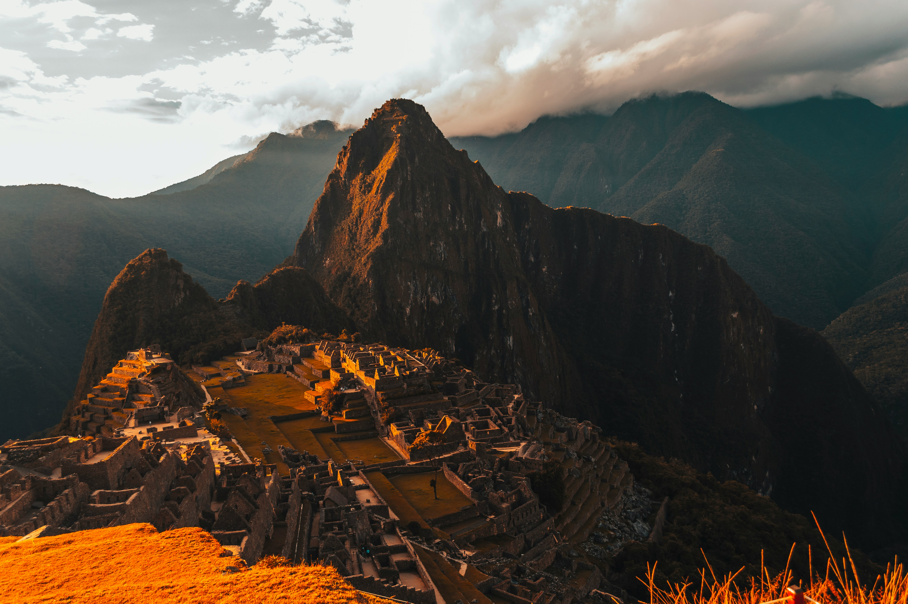

Join me on an unforgettable journey to the ancient wonders of Machu Picchu. The Inca citadel nestled in the Andes Mountains is a testament to the architectural brilliance of its time.
As you ascend the stone steps, surrounded by lush greenery, you'll feel a sense of awe and reverence for the history that unfolds before your eyes. The panoramic views of the surrounding mountains and the intricate stonework make Machu Picchu a must-visit destination for any adventurer.
The journey to Machu Picchu is not just about reaching a destination; it's about immersing yourself in the rich tapestry of Inca culture and history. The terraced fields, ancient temples, and the spiritual energy of the site create an experience that stays with you long after you've left.
Whether you're a history enthusiast, nature lover, or simply seeking adventure, Machu Picchu offers something truly magical. It's a place where the past and the present converge, inviting you to be a part of its timeless story.